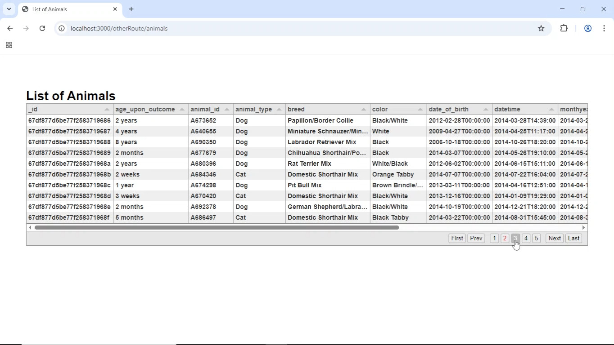

Below you will find the original artifacts, an informal code review describing my initial plans for enhancement, and lastly the enhanced artifacts themselves.
My first artifact demonstrates basic knowledge of building collaborative environments and visual communications as well as the development of a security mindset. The second illustrates my familiarity with algorithmic principles and the use of innovative techniques to accomplish industry-specific goals.
Original Artifacts
The original artifacts can be downloaded here
.Code Review
The Code Review can be viewed here in two parts:
Part 1
Part 2
Artifact One
This artifact is a basic dashboard built in JavaScript using MongoDB, Express, and Node. The original version of this artifact was a Python dashboard created for CS 340 and ran in Jupyter Notebook using the Dash framework.
I selected this artifact to demonstrate rudimentary knowledge in the development of full stack web applications and visualizations through the use of MongoDB, mongoose, Node, Express, and Tabulator, as well as the JavaScript language and the Pug templating engine.
The original artifact consisted of only two files, most of which was contained within a single .ipynb. What began as an effort to port the interface to JavaScript ended up as a reconstruction of the full stack. Because the original assignment ran in Jupyter Notebook, I had not been responsible for the construction of the underlying client-server structure, so I decided to begin with my own instances of Node and Express as a personal challenge.
Two enhancements were planned. The first of these was a bolstering of security. In order to gain hands-on experience with the process, I installed and set up authorization and authentication for my personal instance of MongoDB such that access from locations other than localhost would be denied.
The second planned enhancement was a port of the interface to JavaScript, which eventually became a port of the actual stack to JavaScript. The greatest challenge proved to be grasping the modular structure expected of industry-standard products and accessing the database. This also required me to research the necessary libraries for visualizing the data.
A short video demonstration can be seen here.
The artifact aims to satisfy course outcomes 1, 2, and 5:
“Employ strategies for building collaborative environments that enable diverse audiences to support organizational decision making in the field of computer science.”
“Design, develop, and deliver professional-quality oral, written, and visual communications that are coherent, technically sound, and appropriately adapted to specific audiences and contexts.”
“Develop a security mindset that anticipates adversarial exploits in software architecture and designs to expose potential vulnerabilities, mitigate design flaws, and ensure privacy and enhanced security of data and resources.”
The source code for this artifact can be viewed and downloaded here.
Artifact Two

This artifact is a camera with six degrees of freedom used to view a rendered 3D environment. The original version of this artifact was created as part of my final project for CS 330.
The original assignment only called for an Euler angle-based implementation and was thus subject to gimbal lock. Because this phenomenon is considered undesirable for many use cases of 3D cameras, I initially submitted the assignment with a rotation matrix-based solution, which addressed gimbal lock but had the drawback of being more computationally intensive and difficult to maintain. The enhancement consists of replacing rotation matrices with quaternions for a more efficient and more manageable codebase.
The new solution required research into a proper quaternion-based implementation in accordance with industry standards. Since I had had no exposure to 3D graphic rendering prior to CS 330, this required a more comprehensive understanding of the interactions between the mouse-driven callback functions and the camera object in addition to the quaternions themselves.
This artifact aims to satisfy course outcomes 3 and 4:
"Demonstrate an ability to use well-founded and innovative techniques, skills, and tools in computing practices for the purpose of implementing computer solutions that deliver value and accomplish industry- specific goals."
"Develop a security mindset that anticipates adversarial exploits in software architecture and designs to expose potential vulnerabilities, mitigate design flaws, and ensure privacy and enhanced security of data and resources."
The source code for this artifact can be viewed and downloaded here.